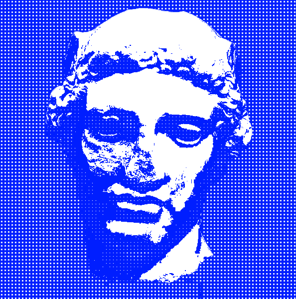

SCANNER
file
load
scan
start
stop
undo
fx
effect: none
effect: b&w
effect: threshold
effect: invert
effect: posterize
effect: dither
normal
multiply
screen
format
free
16:9
4:5
1:1
a4
slow
normal
fast
rec
rec
save
png
webm
PERSEO
mind
cut
Load an image to start
SOURCE
RESULT
